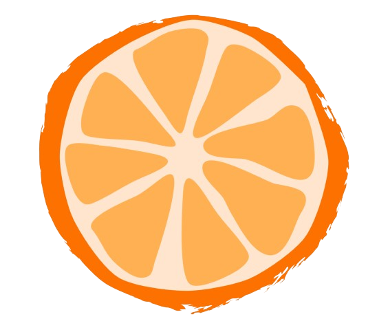

La Gaceta Clara Zetkin es un espacio de divulgación y reflexión impulsado por trabajadorxs de la ciencia y la técnica, activistas por diversos derechos y luchadores sociales. Su objetivo es difundir textos con espíritu crítico que promuevan el debate, el pensamiento transformador y la construcción colectiva del conocimiento.
CIENCIA, CRÍTICA Y LUCHA SOCIAL

Espíritu Crítico
Pensamiento transformador y debate
Construcción Colectiva
Conocimiento desde las bases
Divulgación
Ciencia accesible para todxs
ARTÍCULOS

ARTÍCULO
Ciencia digna y datos abiertos para decidir
La información se ha convertido en un recurso estratégico del capitalismo
contemporáneo. Un análisis del extractivismo de datos, la invisibilización del trabajo de curación y la
concentración de la infraestructura digital.

ARTÍCULO
TransferencIA: un saber sin espacio para el sujeto
Matias Aldo Di Matteo, licenciado en Psicología de la UBA, analiza el uso de los
chatbots de Inteligencia Artificial como consejeros terapéuticos y reivindica la importancia del lazo y la
escucha humana.

NOTA
Sesgos en tecnología
La idea de que las nuevas tecnologías son imparciales proviene de la confianza
general que tenemos en ellas. Pero no debemos confundir precisión con objetividad: todas las tecnologías
contienen los sesgos de quienes las diseñan.

NOTA
Impactos ambientales de los centros de datos
El desarrollo exponencial de la IA multiplica los mega data centers, cuyo consumo
eléctrico e hídrico, residuos electrónicos y contaminación por PFAS impactan gravemente sobre los bienes
comunes.
EDICIONES

GCZ Nº 7
Séptima Edición
La "IA" y los monopolios digitales: ciencia digna, datos abiertos, sesgos
tecnológicos, impacto ambiental y psicológico y la búsqueda de alternativas.

GCZ Nº 6
Sexta Edición
Edición especial de la Gaceta Clara Zetkin con textos y voces diversas para
reflexionar de cara al encuentro.

GCZ Nº 5
Quinta Edición
Agrotóxicos, resistencia indígena, soberanía alimentaria y el rol político de la
ciencia frente al modelo extractivista.

GCZ Nº 4
Cuarta Edición
Mujeres invisibilizadas en la ciencia, disputas por la tierra y la educación, y
comunidades sacrificadas por la minería.
PARTICIPÁ DE LA GACETA
Invitamos a todxs lxs trabajadorxs, activistas e investigadorxs a enviar sus textos. La Gaceta es un espacio abierto y colectivo.